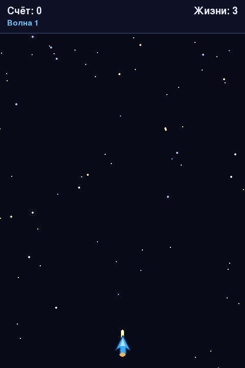

Глава 21 · Проект: космический шутер
Стрельба: создаём и двигаем пули
Пробел создаёт пулю у носа корабля — она улетает вверх, пока не покинет экран.
Пули — словарь с Rect и дробной координатой Y, появляющийся у
носа корабля при нажатии пробела и улетающий вверх со скоростью в пикселях в секунду:
strelba.py
PULYA_SHIRINA, PULYA_VYSOTA = 6, 18
PULYA_SKOROST = 560.0 # px/s
puli = []
def vystrelit():
pulya_rect = pygame.Rect(
korabl.centerx - PULYA_SHIRINA // 2,
korabl.top,
PULYA_SHIRINA,
PULYA_VYSOTA,
)
puli.append({{"rect": pulya_rect, "y": float(pulya_rect.y)}})
# в обработке событий:
if event.type == pygame.KEYDOWN and event.key == pygame.K_SPACE:
vystrelit()
# в обновлении кадра:
for pulya in puli:
pulya["y"] -= PULYA_SKOROST * dt
pulya["rect"].y = round(pulya["y"])
puli = [p for p in puli if p["rect"].bottom > 0] # убираем улетевшие за экран
Список через генератор списков — чистка «мусора»
[p for p in puli if p["rect"].bottom > 0] (генератор списков из главы 11) оставляет только те пули, что ещё видны на экране — без этой строки список пуль рос бы бесконечно, замедляя игру всё сильнее.KEYDOWN — одно событие на одно нажатие
Событие
pygame.KEYDOWN возникает один раз в момент физического нажатия клавиши. Автоматический повтор клавиш в Pygame по умолчанию выключен (включить его можно только явно, через pygame.key.set_repeat(...), а мы этого не делаем) — значит, удержание пробела не порождает новый KEYDOWN на каждом кадре. Здесь это даёт ровно один выстрел за одно нажатие: удобно для одиночной стрельбы, но не подходит для удержания огня — этим займётся раздел 21.13.Практика: стрельба и движение пуль
Pygame открывает нативное окно Python — выполните локально в VS Code, PyCharm или Jupyter
Практика выполняется локально